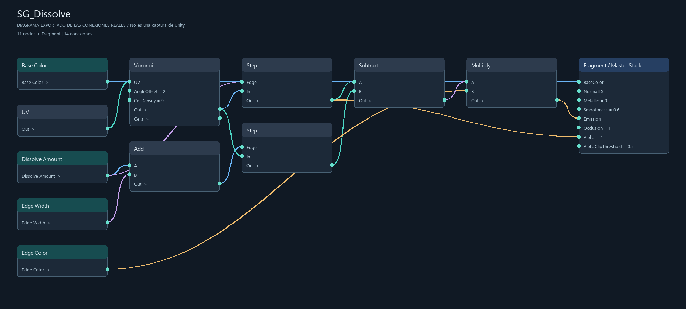
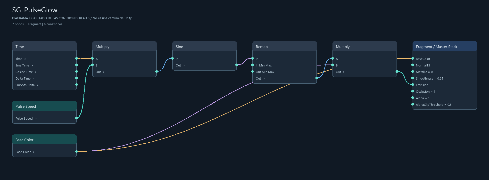
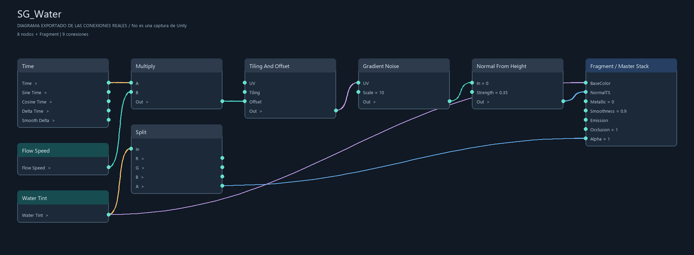
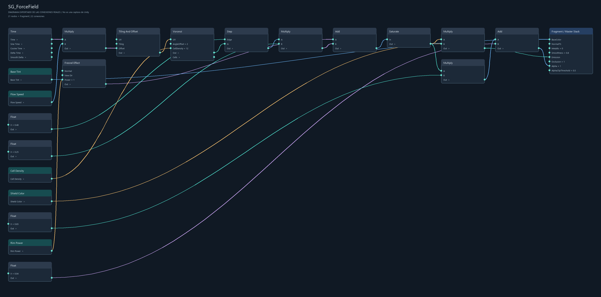
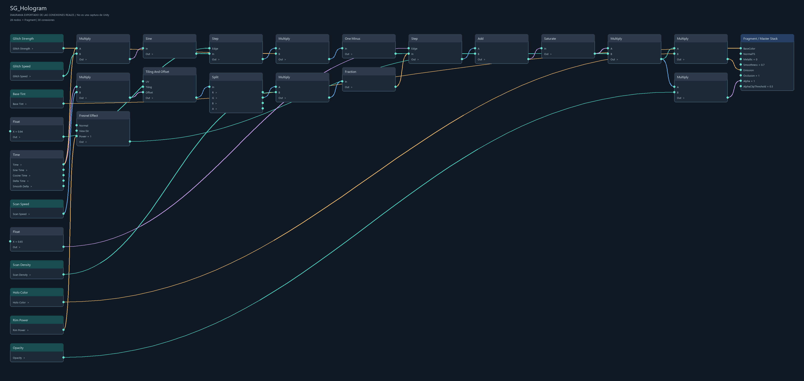
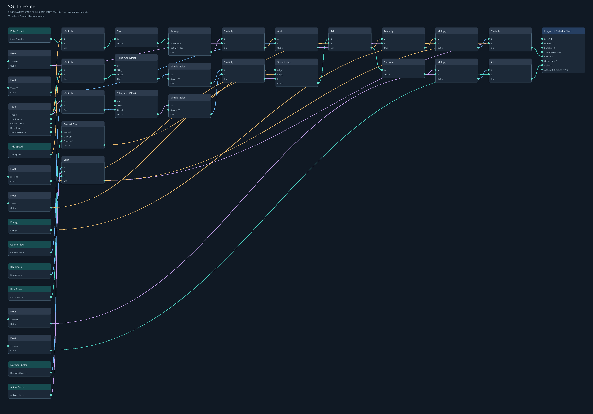

SG_Dissolve
4 propiedades, 11 nodos y 14 conexiones. Abrir SVG y ampliar


Diagramas exportados desde los archivos reales del proyecto. No son capturas de la interfaz de Unity. Abre el SVG para leer todos los nodos con zoom.
4 propiedades, 11 nodos y 14 conexiones. Abrir SVG y ampliar

2 propiedades, 7 nodos y 8 conexiones. Abrir SVG y ampliar

2 propiedades, 8 nodos y 9 conexiones. Abrir SVG y ampliar

5 propiedades, 21 nodos y 22 conexiones. Abrir SVG y ampliar

8 propiedades, 28 nodos y 30 conexiones. Abrir SVG y ampliar

8 propiedades, 37 nodos y 41 conexiones. Abrir SVG y ampliar
